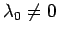
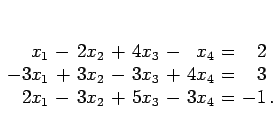
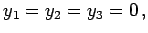
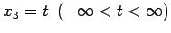
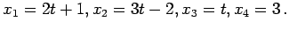

Inhalt Index DeskTop Bronstein

 Lineare Algebra Lineare Gleichungssysteme Lösung linearer Gleichungssysteme Anwendung des Austauschverfahrens
Lineare Algebra Lineare Gleichungssysteme Lösung linearer Gleichungssysteme Anwendung des Austauschverfahrens


Das lineare Gleichungssystem (4.112a) ist unlösbar, wenn sich im voranstehenden 2. Fall  ergibt. Dann enthält das System einen Widerspruch.
| Beispiel | ||||||
|

Das Verfahren endet mit dem 1. Fall: y1, y2, y3 und x3 sind unabhängige Variable. Man setzt  und  ist ein Parameter. Damit lautet die Lösung  |